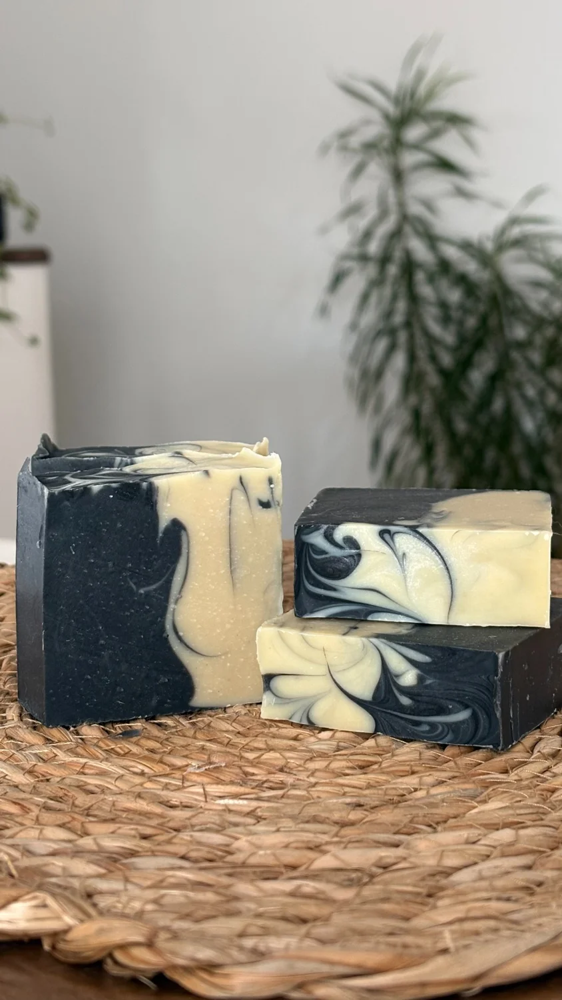

Handcrafted in Gatineau, Québec
Boreal

A bold black-and-white artisan soap inspired by the northern wilderness. Boreal creates a rich, creamy lather that leaves skin feeling soft, refreshed, and comforted, while its crisp woodland aroma brings a sense of calm
Ingredients
Saponified Oils (Organic Olive Oil, Shea Butter, Organic Coconut Oil, Castor Oil), Organic Coconut Milk, Steam-Distilled Essential Oils (Peppermint, Eucalyptus, Tea Tree, Cedarwood), Activated Charcoal, Colloidal Oats.
Browse all products